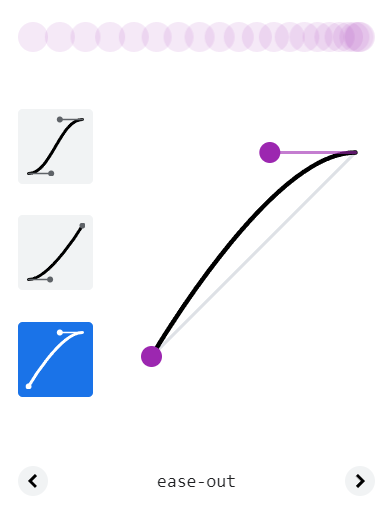
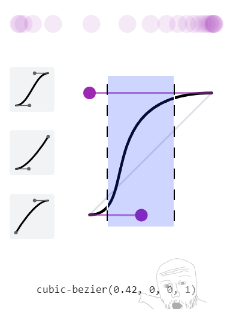
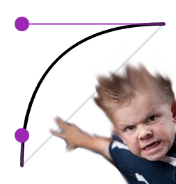

This may be considered basics, but mastering the basics is important too.
In the world of animation, easings control the attitude of your movements and have a great impact on whether something feels good or not. If an animation doesn't feel good for some reason, wrongly chosen easing values are a prime suspect.
I'll go over some common easings and highlight what they are good for using examples.
Meaning, the amount of movement (or change of another property) stays the same throughout the entire animation.
Pretty boring isn't it? This type of animation is definitely not suited for switching between states. It can be great in other situations though.
Example: linear animation is great for continuous looping animations.
This is just a simple repeating texture with a linear scrolling animation.
Note: this frame looks pretty dynamic because there are 2 layers of clouds stacked on top of each other. 2 different scroll speeds create a parallax animation which instantly creates the illusion of depth. If you go into the web inspector and delete one of the cloud layers, you'll instantly see the animation become a bit more dull :)
Scrolling textures have amazing potential. More about that in TODO: the magic of scrolling textures.
In the world of animation an ease-out describes a motion which starts moving instantly and then gradually eases out 👀
This type of animation is great for anything that responds to user interaction. The user presses something and will expect some kind of output. We don't want to delay that output whatsoever, the user is waiting! So BOOM ease-out let's go!
Great for menu's, changing states of objects. It's hard to go wrong with an ease-out! However, the above example doesn't feel right. It uses the default animation curve that css defines as 'ease-out'.
Why doesn't it feel right? It has no playfulness and it doesn't feel alive. Ease-out? More like boring-out.
This is what the default css 'ease-out' looks like in the web-inspectors bezier editor. Only marginally different from a linear easing!
This feels lots better.
cubic-bezier(0.42, 0, 0, 1)
This is what a good ease-out curve looks like for this situation. It has an aggresive ease-out and a subtle ease-in to cancel some of that aggression.
Aggression? Dude, What does that even mean?
To explain, if you open the web-inspector and change the easing curve to match this one. You'll see that the beginning of the animation will become almost instantanious. The ending looks good though!
So the beginning of the animation curve was given a tiny bit of ease-in to actually communicate to the user that something is going to animate. Rather than teleporting half way through the animation (which might confuse and DESTROY your user).
Apart form that, the animation was given a bit more time (0.1s) to complete. Because with such an aggresive curve, 80% of the movement happens in the highlighted part. It's important to adjust your timings to your animation curves, otherwise some movements might not even be visible.
'It doesn't feel right' is a phrase I will be using a lot. Can you explain why? Yes I can explain why, but I can't explain the reasoning behind getting that feeling. It's basically just gut feeling and it always rears it's head when something just doesn't feel right.
A good cheat code is asking yourself: is this animation smooth (it probably should be)? does it have any abrupt stops (it probably shouldn't have)?
{kind=link}